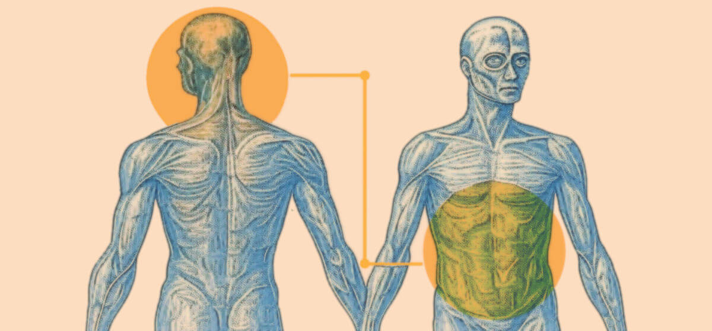

Ragionare non è come fare la cacca!
Il tuo intestino è un secondo cervello che decide prima della tua mente: 500 milioni di neuroni non mentono mai.
Questo meme suggerisce che la nostra pancia possa ragionare facendo confusione fra cervello e intelligenza distribuita. Come fare confusione fra AI e CNC, per dirla usando una metafora in termini prettamente tecnici.
Il nostro sistema digerente è estremamente complesso, anche perché contiene un ecosistema batterico a sé stante, e quindi serve una rete neurale (SNE) per gestirlo. Non come il cuore che pure nella sua ammirevole architettura è solo una pompa per il quale bastano dei nervi a controllarlo.
Sicché, anche oggi, affrontiamo un episodio di psychological warfare nell'abito dei social media. Quella che la NATO ha definito "
virtual manipulation" (manipolazione virtuale) mentre Oxford, più correttamente, l'ha definita "
brain rotting" (cervello che marcisce).
In effetti, anche se la nostra pancia fosse capace di suggerire decisioni, esse sarebbero limitate al "qui e ora" o "fight or flight". Quindi intrinsecamente prive di qualsiasi visione a lungo termine e tanto meno di quella strategica in termini di catena delle conseguenze.
Sembra una cosa molto intelligente ma invece è solo un meme utile a darti un alibi per continuare a fare scelte impulsive, invece di usare la testa per ragionare, che come ogni attività strutturata richiede esercizio e metodo, due cose che sono noiose e faticose, però. Pensaci!
Se, invece, la pancia ti suggerisce di fare la cacca mentre il tuo cervello pensa che si potrebbe aspettare ad arrivare a casa, per liberarsi in tutta comodità e nella familiarità del luogo preposto, dai retta alla pancia.
L'argomento secondo i chatbot
Mangiate m*rda: un miliardo di miliardi di mosche non possono sbagliare!
Perché ci interessa l'opinione dei chatbot sull'argomento? Per diverse buone ragioni, la loro capacità di riconoscere attività social che, magari solo per il bait-click, incrementano il fenomeno del "brain rotting".
Quindi, per analogia, siano in grado di identificare azioni di manipolazione tramite social network, ed attivare un allarme quando queste attività possono costituire un pericolo di sicurezza per la democrazia o la difesa.
Puro umorismo, per non dire sarcasmo, se pensiamo allo scandalo di Cambridge Analytica in cui nel cercare l'agente straniero antagonista che manipolava le elezioni in USA e in Europa, abbiamo trovato noi stessi, noi occidentali.
Ce la cantiamo e ce la suoniamo, quindi è utile capire come potremmo usare i chatbot per avere una prospettiva meno emotiva sulla ricezione delle informazioni e magari uscire dalla trappola dell'auto-conferma e dell'auto-referenzialità.
Sotto questo punto di vista ho chiesto l'opinione di tre dei più noti e usati chatbot riguardo al testo nella sezione precedente, utilizzando un prompt neutro per supportare tale richiesta.
Quindi ho raccolto le risposte in un
documento, dando ad esso un minimo di struttura in maniera che un quarto chatbot potesse correttamente accedere alle varie informazioni senza fare confusione.
Claude che riassume ed integra le risposte date da Gemini, Grok e ChatGPT.
Al quarto chatbot ho fornito un prompt più strutturato che andava spiegare la natura del documento, come avrebbe dovuto trattare i vari contributi e poi rispondere alla domanda originale.
L'analisi dell'argomento
La risposta creata da Claude è interessante sotto diversi punti di vista e quindi ho deciso di inserirla integralmente in questa sezione mentre nel seguito andrò ad elencare quali sono i possibili effetti collaterali di affidarsi a questo tipo di analisi.
Si noti che i chatbot sono capaci di identificare quelle che è umorismo da testi invece più letterali come significato. Una capacità inaspettata se pensiamo che l'umorismo è una dimensione in cui alcuni umani faticano a perceperie e gestire.
Evidentemente però riconoscere l'umorismo come uno schema non è poi così impegnativo, non tanto quanto poi comprenderne tutte le sfumature, specialmente quelle meno razionali e più umane. Ma questo è spiegato in
The illusion of thinking.
Claude 4: riassunto e integrazione
Analizzando questo interessante caso di "meme vs contro-meme", vedo un perfetto esempio di come la comunicazione digitale possa distorcere concetti scientifici per creare narrazioni semplificate ma fuorvianti.
Il meme: neuroscienza pop al servizio dell'impulsività
Il meme sfrutta un dato reale - l'esistenza del sistema nervoso enterico con i suoi circa 500 milioni di neuroni - per costruire una narrazione che legittima le decisioni impulsive. È un classico esempio di "scienza pop": prende un concetto complesso, lo semplifica eccessivamente e lo trasforma in una verità apparentemente profonda ma in realtà fuorviante.
La strategia comunicativa è efficace perché offre un alibi scientifico a chi preferisce seguire l'istinto piuttosto che impegnarsi nel faticoso processo del ragionamento strutturato. È rassicurante sentirsi dire che "500 milioni di neuroni non mentono mai" - suona autorevole e ci solleva dalla responsabilità di pensare criticamente.
Il commento: anatomia di una manipolazione cognitiva
Il commento compie un'operazione di decostruzione particolarmente efficace, operando su più livelli:
Livello tecnico: Distingue chiaramente tra la complessità funzionale del sistema nervoso enterico (necessario per gestire l'ecosistema digestivo e batterico) e l'intelligenza strategica della corteccia cerebrale. L'analogia AI/CNC è brillante: un sistema può essere sofisticato senza essere "intelligente" nel senso cognitivo del termine.
Livello sociologico: Inquadra il fenomeno nel contesto più ampio della "psychological warfare" digitale, utilizzando terminologie precise come "virtual manipulation" e "brain rotting". Questo è cruciale perché sposta l'attenzione dal singolo meme al meccanismo sistemico di degradazione del pensiero critico.
Livello pragmatico: La distinzione tra decisioni "qui e ora" (per cui l'istinto può essere utile) e pianificazione strategica (che richiede elaborazione razionale) è fondamentale. L'esempio finale della cacca è geniale perché cristallizza il concetto in modo memorabile e accessibile.
Dinamiche più profonde
Quello che emerge è un fenomeno più ampio: la
gamificazione della saggezza. I social media premiano contenuti che sembrano profondi ma sono facilmente digeribili, creando l'illusione di aver acquisito una conoscenza significativa senza sforzo. Questo alimenta quello che potremmo chiamare "analfabetismo funzionale 2.0": non l'incapacità di leggere, ma l'incapacità di distinguere tra informazione e disinformazione plausibile.
Il meme in questione è particolarmente insidioso perché non è completamente falso - il sistema nervoso enterico esiste davvero - ma distorce la sua funzione per supportare una conclusione che va contro l'evidenza scientifica. È un esempio perfetto di come la post-verità non neghi i fatti, ma li ricontestualizzi in modo fuorviante.
La resistenza attraverso l'ironia
Il commento dimostra come si possa combattere questa tendenza senza cadere nel tono professorale: usa l'ironia intelligente, mantiene il rigore scientifico ma rimane accessibile. La chiusa umoristica non è solo un modo per alleggerire, ma un esempio di come l'intelligenza critica possa essere più coinvolgente della pseudo-saggezza virale.
In definitiva, questo scambio illustra perfettamente la battaglia culturale in corso tra il pensiero veloce (appealing ma superficiale) e il pensiero lento (faticoso ma solido). La posta in gioco non è solo la correttezza scientifica, ma la capacità collettiva di navigare un mondo sempre più complesso senza cadere nelle trappole cognitive che ci vengono quotidianamente tese.
Share alike
© 2025, Roberto A. Foglietta <roberto.foglietta@gmail.com>, CC BY-NC-ND 4.0